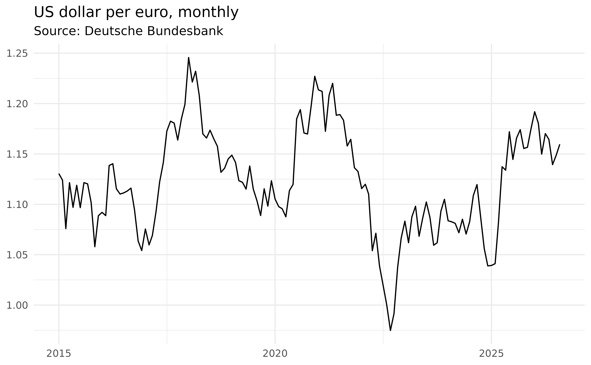

bbk gives you one consistent way to pull data from many central bank APIs. Every workflow follows the same two steps, no matter which bank you query:
- Find the identifier of the series (or dataset) you want.
-
Fetch it with the matching
*_data()function.
Step 1: find the identifier
Most central banks organise data into datasets (dataflows), each built on a data structure that defines the dimensions whose codes combine into a series key. bbk lets you explore both from R.
Browse the Bundesbank’s available dataflows:
head(bbk_metadata("dataflow"))
#> id
#> <char>
#> 1: BBAF3
#> 2: BBAI3
#> 3: BBAPV
#> 4: BBASV
#> 5: BBBEK1
#> 6: BBBEK2
#> name
#> <char>
#> 1: Financial Accounts - internet time series
#> 2: Deutsche Bundesbank, Statistics on Insurance Corporations and Pension Funds
#> 3: Deutsche Bundesbank, Statistics on Pension funds
#> 4: Deutsche Bundesbank, Statistics on Insurance Corporations (Solvency I + II)
#> 5: AUSTA - Banks in Germany
#> 6: AUSTA - Foreign branchesTake BBEX3, the exchange-rate dataset. It is built on
the BBK_ERX data structure, whose dimensions you can list
with bbk_dimension():
bbk_dimension("BBK_ERX")
#> id position codelist
#> <char> <int> <char>
#> 1: BBK_STD_FREQ 1 CL_BBK_STD_FREQ
#> 2: BBK_STD_CURRENCY 2 CL_BBK_STD_CURRENCY
#> 3: BBK_ERX_PARTNER_CURRENCY 3 CL_BBK_STD_CURRENCY
#> 4: BBK_ERX_SERIES_TYPE 4 CL_BBK_ERX_SERIES_TYPE
#> 5: BBK_ERX_RATE_TYPE 5 CL_BBK_ERX_RATE_TYPE
#> 6: BBK_ERX_SUFFIX 6 CL_BBK_ERX_SUFFIXEach dimension supplies one dot-separated part of the key. So a
monthly (M) US dollar (USD) per euro
(EUR) rate, of series type BB, rate type
AC, suffix A01, has the key
M.USD.EUR.BB.AC.A01.
Step 2: fetch the data
Pass the dataflow and key to bbk_data():
usd_eur = bbk_data("BBEX3", key = "M.USD.EUR.BB.AC.A01", start_period = "2015-01-01")
head(usd_eur)
#> date key value freq
#> <Date> <char> <num> <char>
#> 1: 2015-01-01 BBEX3.M.USD.EUR.BB.AC.A01 1.1305 monthly
#> 2: 2015-02-01 BBEX3.M.USD.EUR.BB.AC.A01 1.1240 monthly
#> 3: 2015-03-01 BBEX3.M.USD.EUR.BB.AC.A01 1.0759 monthly
#> 4: 2015-04-01 BBEX3.M.USD.EUR.BB.AC.A01 1.1215 monthly
#> 5: 2015-05-01 BBEX3.M.USD.EUR.BB.AC.A01 1.0970 monthly
#> 6: 2015-06-01 BBEX3.M.USD.EUR.BB.AC.A01 1.1189 monthly
#> title
#> <char>
#> 1: Euro foreign exchange reference rate of the ECB / EUR 1 = USD ... / United States
#> 2: Euro foreign exchange reference rate of the ECB / EUR 1 = USD ... / United States
#> 3: Euro foreign exchange reference rate of the ECB / EUR 1 = USD ... / United States
#> 4: Euro foreign exchange reference rate of the ECB / EUR 1 = USD ... / United States
#> 5: Euro foreign exchange reference rate of the ECB / EUR 1 = USD ... / United States
#> 6: Euro foreign exchange reference rate of the ECB / EUR 1 = USD ... / United States
#> currency erx_partner_currency erx_series_type erx_rate_type erx_suffix
#> <char> <char> <char> <char> <char>
#> 1: USD EUR BB AC A01
#> 2: USD EUR BB AC A01
#> 3: USD EUR BB AC A01
#> 4: USD EUR BB AC A01
#> 5: USD EUR BB AC A01
#> 6: USD EUR BB AC A01
#> time_format decimals unit unit_mult category
#> <char> <int> <char> <char> <char>
#> 1: P1M 4 USD 0 WEDE
#> 2: P1M 4 USD 0 WEDE
#> 3: P1M 4 USD 0 WEDE
#> 4: P1M 4 USD 0 WEDE
#> 5: P1M 4 USD 0 WEDE
#> 6: P1M 4 USD 0 WEDE
#> comm_gen
#> <char>
#> 1: The ECB publishes daily euro foreign exchange reference rates, which are calculated on the basis of the concertation between central banks at 14.15.
#> 2: The ECB publishes daily euro foreign exchange reference rates, which are calculated on the basis of the concertation between central banks at 14.15.
#> 3: The ECB publishes daily euro foreign exchange reference rates, which are calculated on the basis of the concertation between central banks at 14.15.
#> 4: The ECB publishes daily euro foreign exchange reference rates, which are calculated on the basis of the concertation between central banks at 14.15.
#> 5: The ECB publishes daily euro foreign exchange reference rates, which are calculated on the basis of the concertation between central banks at 14.15.
#> 6: The ECB publishes daily euro foreign exchange reference rates, which are calculated on the basis of the concertation between central banks at 14.15.
#> comm_src
#> <char>
#> 1: European Central Bank (ECB).
#> 2: European Central Bank (ECB).
#> 3: European Central Bank (ECB).
#> 4: European Central Bank (ECB).
#> 5: European Central Bank (ECB).
#> 6: European Central Bank (ECB).If you already know the full identifier, bbk_series()
fetches a single series in one call by prefixing the key with the
dataflow:
bbk_series("BBEX3.M.USD.EUR.BB.AC.A01")Every *_data() function returns a tidy
data.table with a date column and a
value column, ready for analysis or plotting:
library(ggplot2)
ggplot(usd_eur, aes(date, value)) +
geom_line() +
theme_minimal() +
theme(axis.title = element_blank()) +
labs(title = "US dollar per euro, monthly", subtitle = "Source: Deutsche Bundesbank")
The same two steps work for every supported bank: swap the prefix
(bbk_, ecb_, snb_,
cnb_, …) and use that bank’s discovery and
*_data() functions. See the function reference for what each bank
provides, and Comparing exchange
rates across central banks for a worked example that pulls a
comparable series from several banks at once.
API keys
Most banks require no authentication. The exceptions are Banque de
France (bdf_*) and the Czech National Bank ARAD database
(cnb_data() and friends), which each need a free API key.
Pass it via the api_key argument, or set it once in the
BANQUEDEFRANCE_KEY or CNB_ARAD_KEY environment
variable (e.g. in your .Renviron).
Caching
bbk can cache API responses on disk, so re-running a query is instant and you avoid hammering the upstream API. Caching is off by default; enabling it is recommended:
options(bbk.cache = TRUE)Put that line in your .Rprofile to enable caching for
every session. Cached responses are kept for one day by default; tune
this with options(bbk.cache_max_age = <seconds>).
Inspect or clear the cache with:
bbk_cache_dir() # where responses are stored
bbk_cache_clear() # wipe the cache